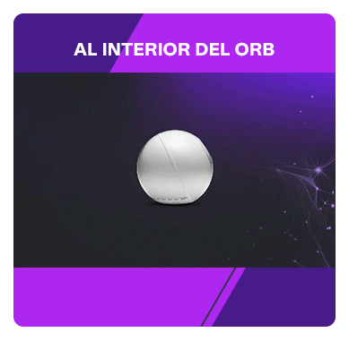
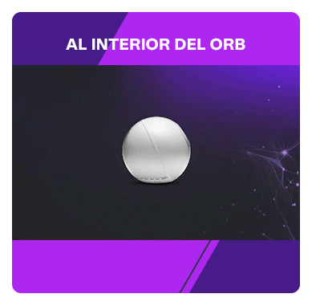

Noticias RCN
DOS LLAVES:
Nicolás usó la suya y la de otros para ganar más dinero. María Elena solo quería unos pesos de más.
Leer más 



Nicolás usó la suya y la de otros para ganar más dinero. María Elena solo quería unos pesos de más.
Leer másNadie estaba listo. Dispositivos de una tecnología inesperada ingresaron a Colombia. Ahora hay que modificar la ley.
Leer másHuellas, palmas y rostros: los sistemas de verificación más usados en Colombia no escanean iris.
Leer másWorld y la búsqueda de la única llave que los robots no pueden duplicar.
Leer másPoderosa, pero frágil. La estructura de una llave delicada que determina cómo vemos el mundo.
Leer másCamilo captura el iris en instantes que van más allá de una llave que abre puertas, sino que mira en su interior.
Leer másSeguridad equivale a supervivencia. la evolución humana ha adaptado tanto los procesos mentales humanos para detectar el peligro,
como la capacidad de los sentidos para alertar sobre amenazas latentes y actuar para evitar el daño inminente.
Cuando creíamos que los sistemas de seguridad inventados por el hombre estaban lo suficientemente capacitados para garantizar nuestra supervivencia,
una era de robots inteligentes amenaza con vulnerar esa última barrera para control de accesos.
Este especial fue creado por:
© 2024 Nombre del Sitio. Todos los derechos reservados.